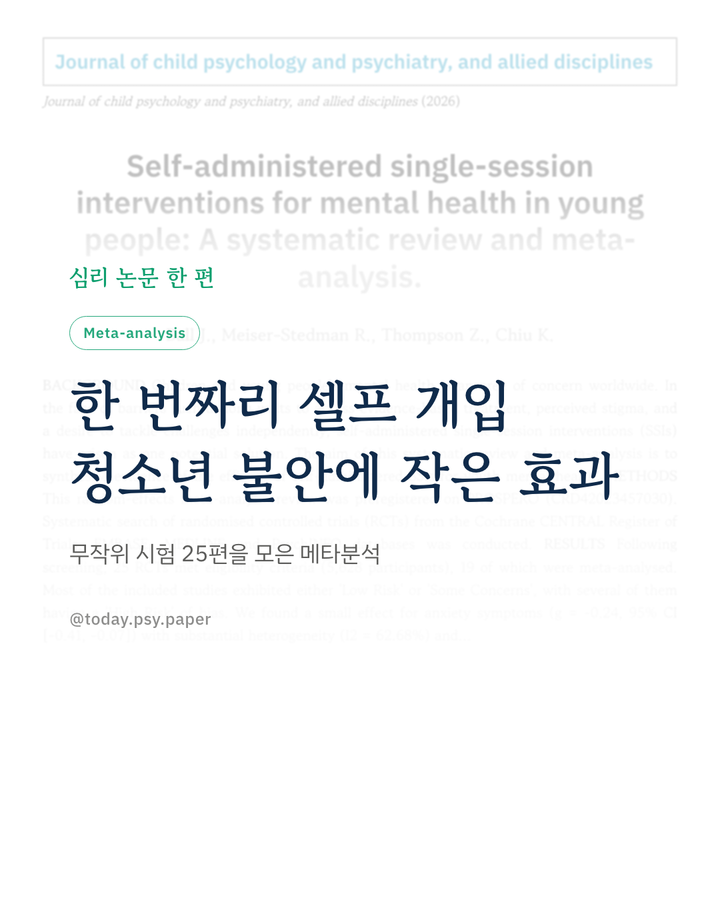
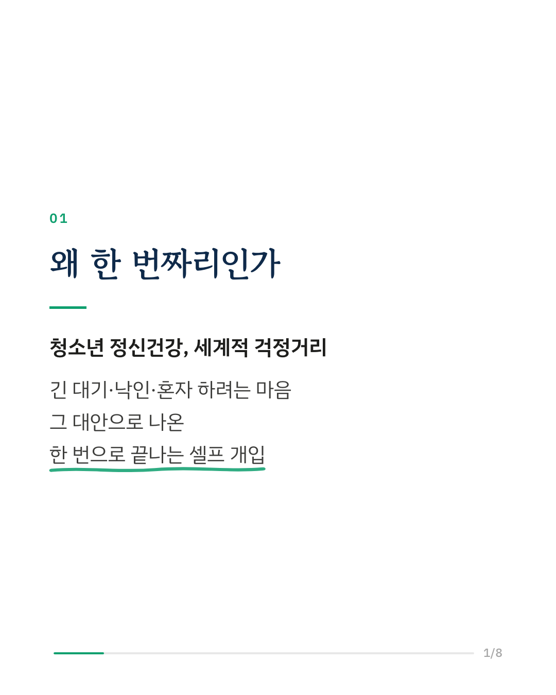
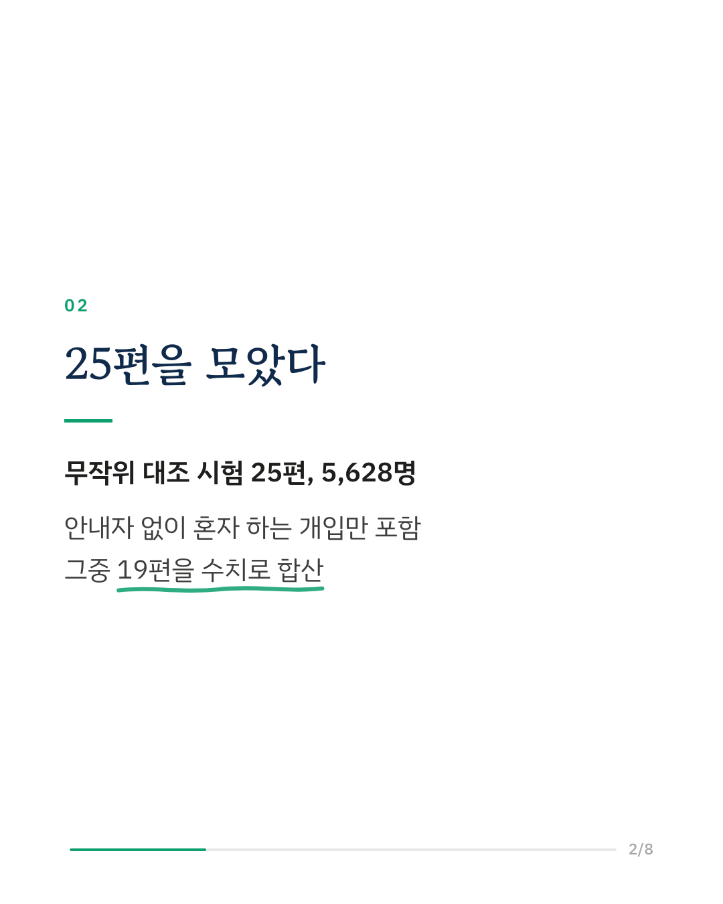
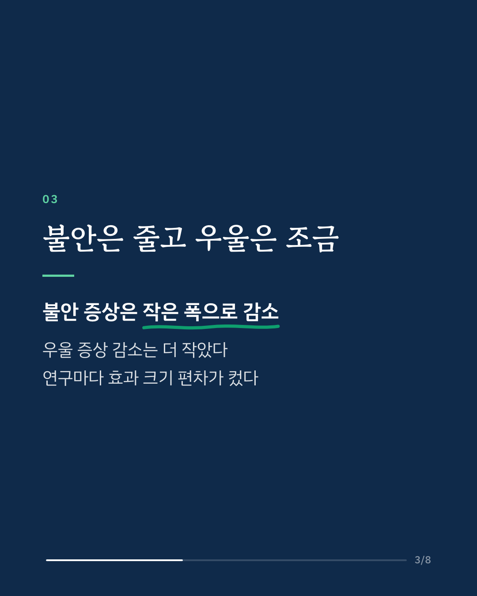
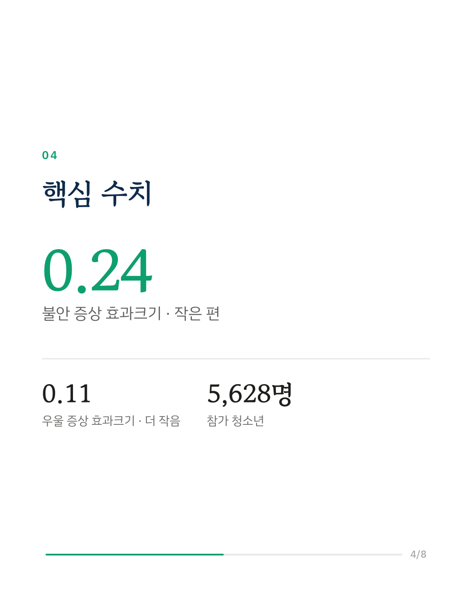
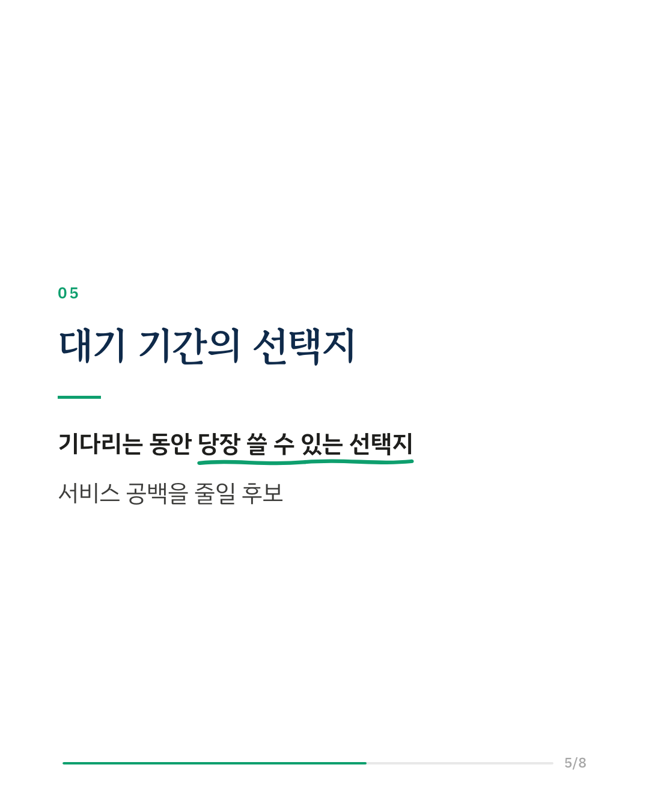
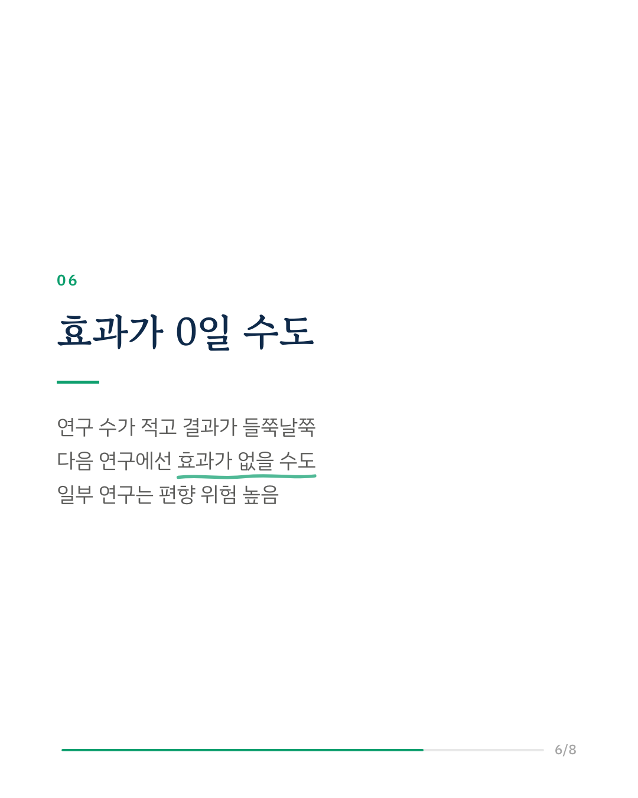
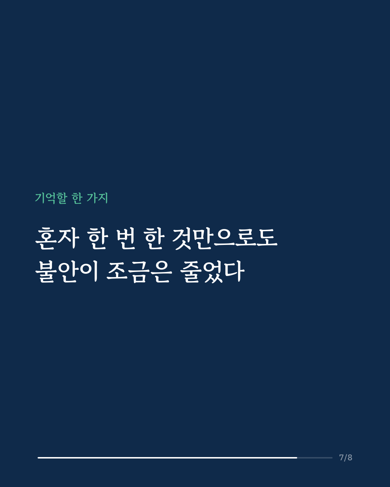
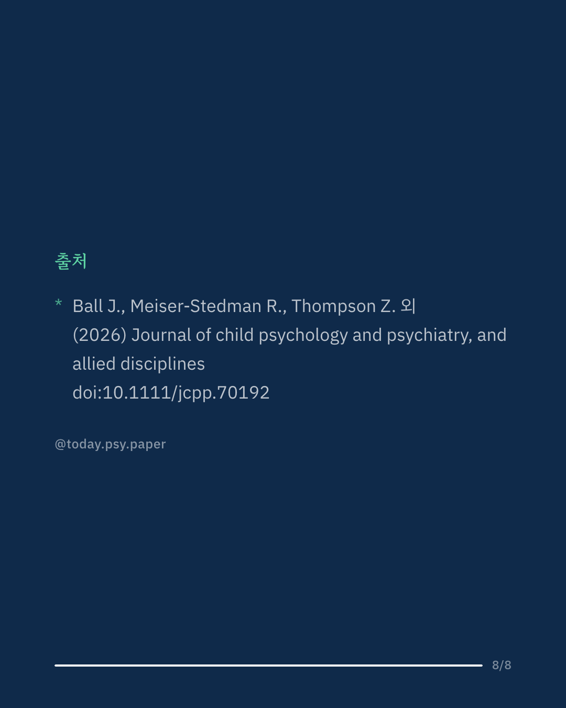

청소년 정신건강 문제는 세계 어디서나 늘고 있지만, 근거 있는 상담이나 치료를 받기까지 대기가 길고 낙인 걱정도 큽니다. 혼자 해결하고 싶어 하는 청소년도 많습니다. 그래서 나온 대안이 안내자 없이 혼자서 한 번에 끝내는 '셀프 단회기 개입'입니다. 이 연구는 그 효과를 살핀 무작위 대조 시험 25편(참가자 5,628명)을 체계적으로 모아, 그중 19편을 메타분석으로 합산했습니다. 결과는 불안 증상에서 작은 효과가 나타났습니다. 효과크기는 0.24로 '작은 편'에 해당합니다. 우울 증상도 줄어드는 방향이었지만 효과크기 0.11로 더 작았습니다. 두 결과 모두 연구마다 편차가 상당히 컸습니다. 연구자들은 한 번짜리 셀프 개입이 청소년의 불안·우울 증상을 줄이는 데 도움이 될 수 있고, 아동·청소년 정신건강 서비스의 공백을 메울 후보로 더 살펴볼 가치가 있다고 봅니다. 다만 포함된 연구 수가 적고 결과가 들쭉날쭉해, 예측 구간으로 보면 다음 연구에서는 효과가 없을 가능성도 남아 있습니다. 일부 연구는 편향 위험이 높다고 평가됐습니다. Journal of Child Psychology and Psychiatry (2026), 'Self-administered single-session interventions for mental health in young people: A systematic review and meta-analysis' DOI: 10.1111/jcpp.70192 #임상심리 #정신건강정보 #심리학연구 #논문리뷰 #청소년정신건강 #불안 #단회기개입 #자기돌봄
python3 publish.py 42318615